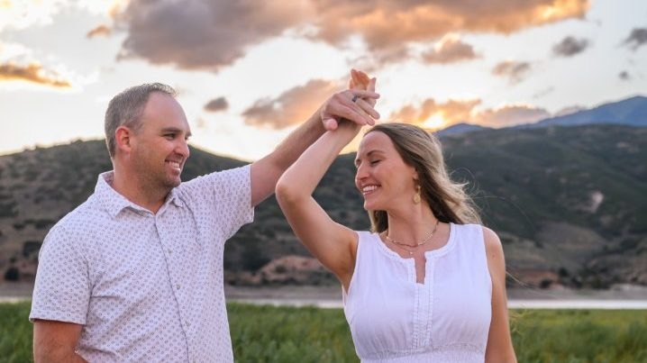
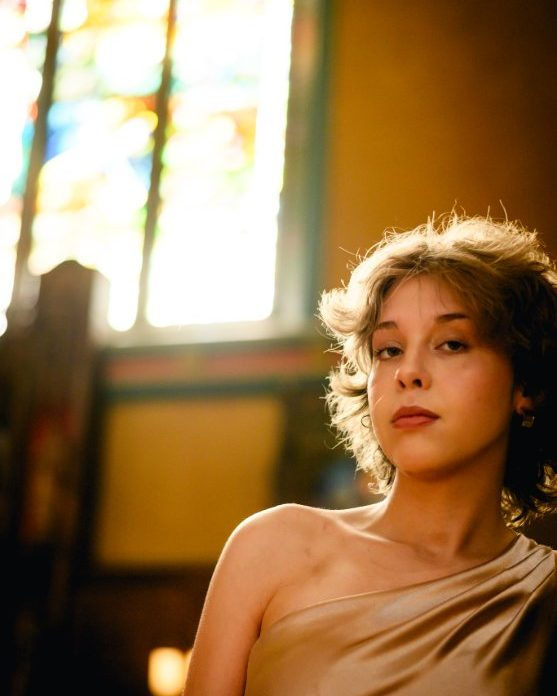
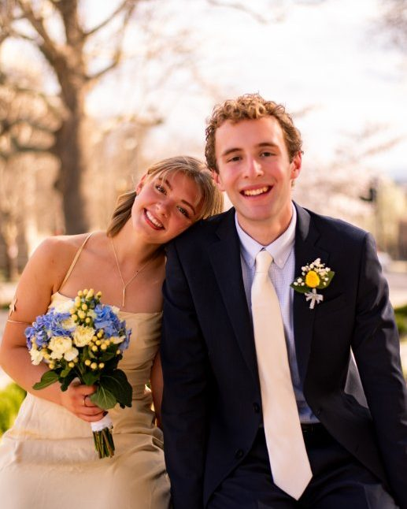
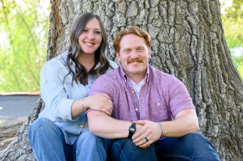
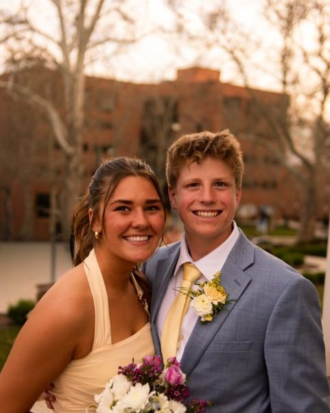
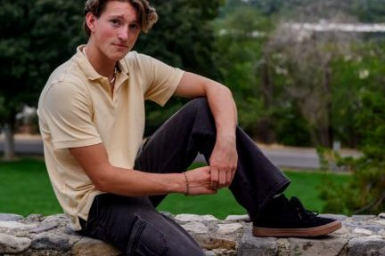

Provo & Utah portrait photography
Portraits
Portraits that look like you on a good day — relaxed, unforced, and photographed in a place that means something.

The session look
Natural light, natural direction.
Portrait sessions are guided just enough: a little direction on where to stand and where to look, and plenty of room to relax into it. The result is photos that feel like you, not like a pose you held.
Sessions take place on location — a favorite canyon, a downtown street, a quiet field — anywhere in Utah that fits the mood you want.
What to expect
From first message to finished photos.
- Plan togetherWe pick a location and time of day together, and talk through outfits and anything you want to include.
- The session itselfA relaxed, guided session on location. Bring a second outfit if you want variety.
- Your finished photosYour edited photos are delivered as an online gallery. Delivery details are confirmed when you book.
Planning details
Good to know before you book.
- Locations: on location across Utah, based in Provo, with travel as far as Farmington for photo work.
- What to wear: something you feel confident in, in colors that sit well with the location. Avoid large logos or busy patterns.
- Who can come: partners, friends, or pets — mention them in your inquiry so they can be planned in.
- Couples: engagement and couple portraits are welcome here too — see proposals & engagements.
Gallery
Portraits around Utah




Questions
Portrait FAQ
Where do portrait sessions take place?
Portrait sessions take place on location across Utah. Trevor Adair Photography is based in Provo and travels as far as Farmington for photo work.
What should I wear for a portrait session?
Wear something you feel confident in, in colors that sit well with the location. Avoid large logos or busy patterns, and bring a second outfit if you want variety.
Can I bring someone else or props to my session?
Yes. Mention who or what you would like to include when you get in touch, so it can be planned into the session.
How do I book a portrait session?
Send a message through the contact page with your preferred dates, location ideas, and shoot type. Availability is confirmed from your inquiry.
How much does a portrait session cost?
Standard portrait sessions start at $280. Contact Trevor Adair Photography for availability and booking details.
Your session
Let's plan your portraits.
Share your dates, location ideas, and what you're hoping for — we'll take it from there.